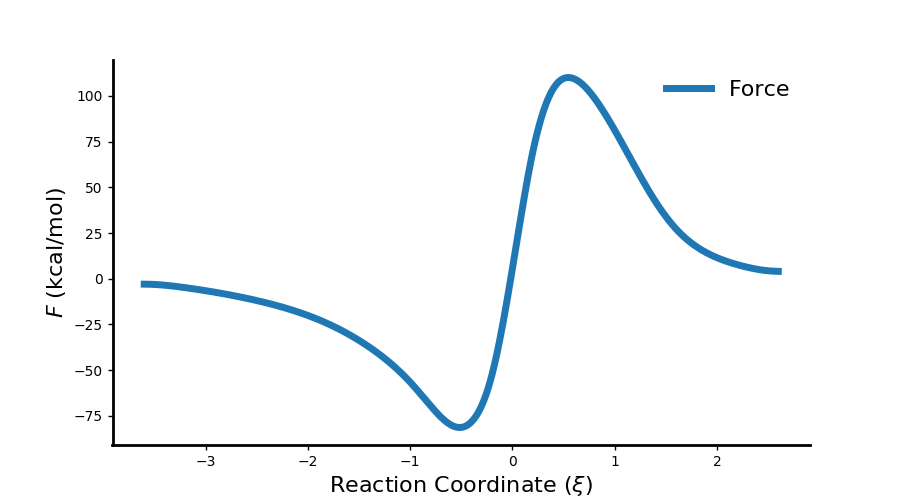

Reaction Force Analysis¶
General Theory¶
Many of the methods implemented in pyrex center around the definition of a quantity known as the reaction force (\(F\)). Analogous to the force defined in classical physics, the force for the reaction is defined as the negative gradient of the energy (\(E\)) with respect to the reaction coordinate (\(\xi\)):
\[F(\xi) = - \frac{\partial E}{\partial \xi},\]
this produces a reaction force profile with a general shape defined by two critical points along the coordinate based on the force maximum and force minimum. This allows for a general partitioning of any reaction into three well-defined regions, a reactant region, transition state region, and a product region. In another analogy to classical physics one can integrate over the force in a particular region and obtain a reaction work (\(w\)). For example, the first region of a reaction which would occur from the reactant structure (\(\xi_{\rm R}\)) to the force minimum (\(\xi_{\rm min}\)) would be defined as:
\[w_1 = - \int_{\xi_{\rm R}}^{\xi_{\rm min}} F(\xi) d\xi,\]
this is essentially the area under the curve of the force profile indicating the work done in the that region of the reaction. When interpreting the force profile, one can think of the negative forces as impeding reaction progress, while positive forces are seen as reaction driving.
Example¶
Reaction force calculations are automatically done after the energy is either calculated or read in from a file. The example below is an input file for the reaction of carbon dioxide and the hydrogen molecule. The “do_energy” keyword is added to the “pyrex” block so this input will calculate the energy at each structure and calculate the reaction force:
{
"molecule": {
"symbols": ["C","O","O","H","H"],
"molecular_charge": "0",
"molecular_multiplicity": 1
},
"model": {
"method": "scf",
"basis": "sto-3g"
},
"pyrex": {
"nthreads": 4,
"irc_filename": "full_irc.xyz",
"do_energy" : true,
"irc_stepsize": 0.2
}
}
This calculation will produce a “force.csv” file that will contain the reaction force along the reaction coordinate. These results can be plotted using the following REXplot input:
{
"rexplot" : {
"file" : "force.csv",
"properties" : ["Force"],
"coordinate" : "Coordinate",
"x_label" : "Reaction Coordinate ($\\xi$)",
"y_label" : "$F$ (kcal/mol)",
"scale" : 627.509,
"fig_dims" : [9.0, 5.0],
"plot_file" : "force.png"
}
}
Running this input will generate the following plot of the reaction force
{kind=link}